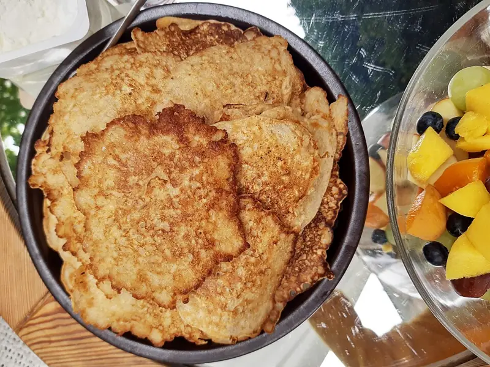

Фото: Gerda Arendt, CC BY-SA 4.0

Овсяноблин
Блин из овсянки и яиц с начинкой, сытный завтрак на сковороде
15 мин2 порц.339 ккал на порциюБ 18 · Ж 20 · У 21Русская кухня
Продукты на 2 порц.
- Яйцо куриное4 шт
- Овсяные хлопья4 ст. л.
- Молоко4 ст. л.
- Соль1 щеп.
- Растительное масло2 ч. л.
- Сыр твёрдый по желанию60 г
- Помидоры по желанию1 шт
Как готовить
- Смешайте яйца, хлопья, молоко и соль. Оставьте на 5 минут, чтобы хлопья набухли.
- Разогрейте сковороду диаметром 22-24 см с 1 ч. л. масла на среднем огне.
- Вылейте половину смеси, распределите по дну. Жарьте под крышкой 3 минуты, пока верх не схватится.
- Переверните лопаткой и жарьте ещё 1 минуту.
- На одну половину выложите тёртый сыр и кружки помидора, накройте второй половиной. Подержите 1 минуту, чтобы сыр расплавился.
- Так же приготовьте второй овсяноблин.
Совет. Если блин рвётся при перевороте, хлопья не успели набухнуть или огонь слишком сильный. Мелкие хлопья быстрого приготовления держат форму лучше.